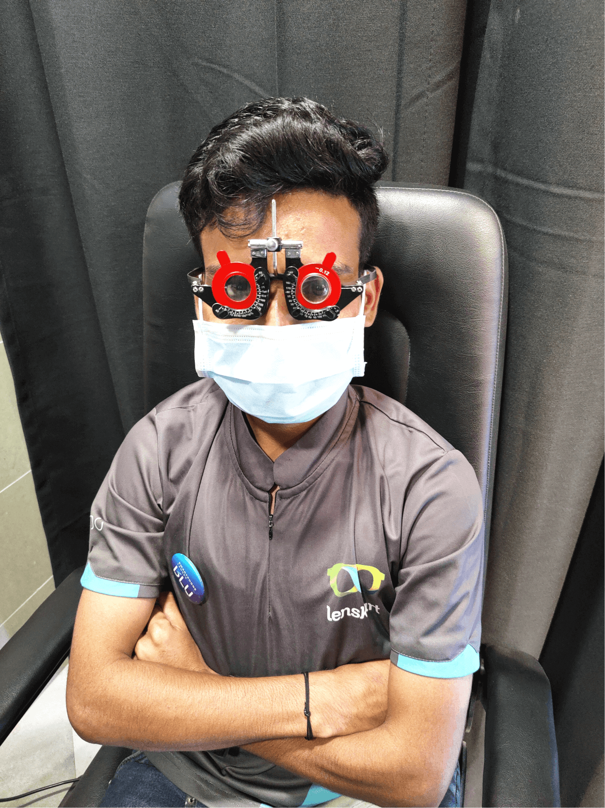
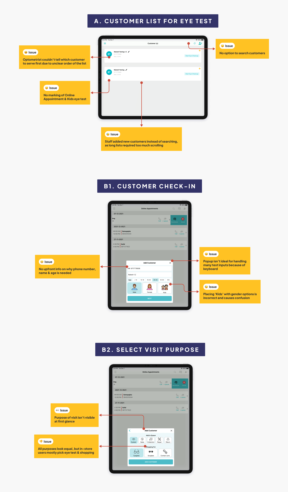
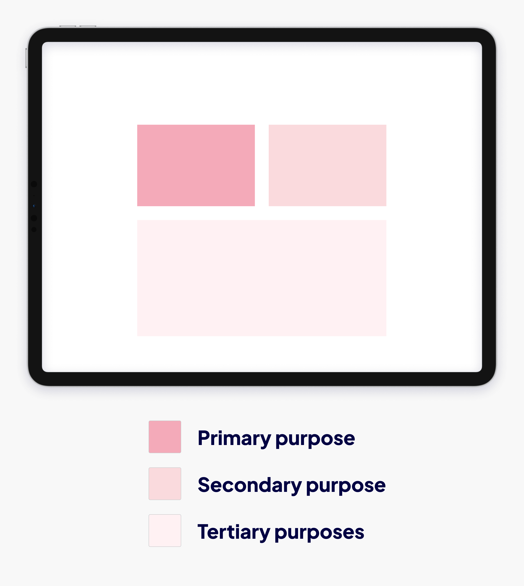
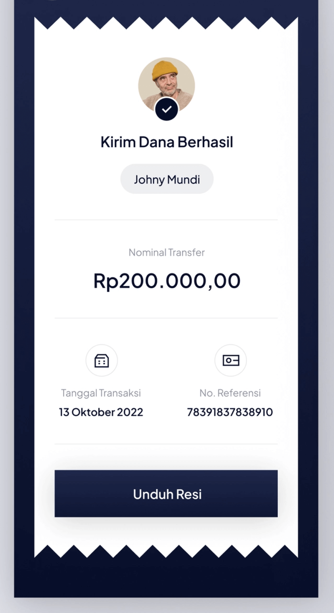
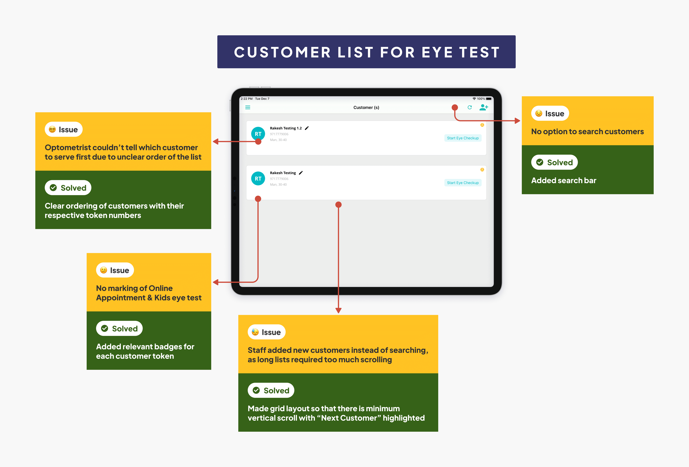
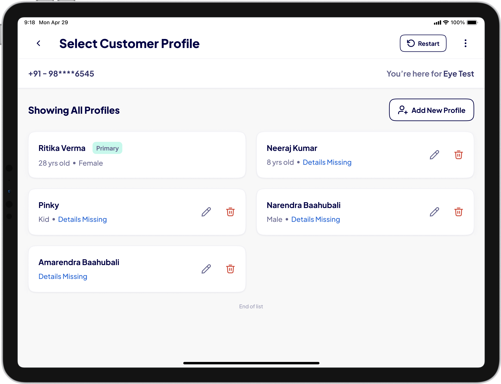

About the Project
Problems at Store
Customer Problems
- Customers waited an average of 34 mins at stores from walking-in to receiving their prescriptions
- They don't know the wait time upfront which added to frustration
Store Staff Problems
- Struggled to handle multiple customers during rush hours (like weekend evenings), especially eye tests
- No way to track or share wait times with individual customers
Impact Results
Users
Customers
Walk-in visitors who purchase eyeglasses at stores
Optometrists
Medically certified professionals who conduct eye tests
Sales Associates
Store staff who attend customers and drive sales
Who are Optometrists?
An optometrist is an eye care professional medically certified to examine vision conditions in human beings.
Currently, nearly 2,000 optometrists are enrolled with Lenskart across India.

Timeline
April 2023
Project started
August 2023
Released v1.0
User Flow

Impact
Data measured in 3 weeks of Q2 2023


- Time taken in an eye test on average came down from 34 mins (Apr 2023) to 21 mins (Nov 2023). Currently it's 8.16 mins.
- 72.34% of eye tests happen in under 10 mins across all Lenskart stores.
- Sales conversion at stores went from 31.2% to 33.9% in 3 weeks of Q2 2023.
Key Insight
How did token system & prescription automation lead to increased sales conversion?
78% customers walk-in to buy new eyeglasses and only 12% come just for an eye test. Since glasses are prescription-based, they have a medical need too.
After this flow, store operations became smoother and less chaotic.
- Faster and accurate eye tests mean customers spend less time inside clinic and more time shopping
- Staff now have more time to sell and it's easier to convince customers to buy when there's a change in their eye power
Customer's Benefit
Quick and accurate prescriptions let customers prioritise selecting eyeframes that fulfil their medical needs
Business' Benefit
- Customers checking their eye power results in new or repeat purchases, boosting business growth
- Store ATV: ₹2,040
Research
Why Redesign?
Customers prefer a fair, first-come-first-serve system
They expect to be served in the order they arrive. A transparent token queue builds trust
Eye test can be for someone other than the person giving number
Many walk in with family or friends. We should capture who the service is actually for, not just who shared their number
Optoms need the same walk-in queue
Optoms should see the same real-time queue as store staff to avoid confusion
Customers want live updates on their wait time
Providing status and wait-time updates helps reduce frustration
Inconsistent & non-adaptive UI
Legacy design language, inconsistent icons, small tap areas, and not usable in both iPad orientations
User Quote
"Pata nahi kitna time aur lagega"
"I have no idea how much longer this will take" - customer at a Lenskart store
UX Audit of Old Flows
- Usability heuristic evaluation of customer check-in flow when they walk-in to store
- Eye test customer list used by optometrists
Principles used in UX audit
- Match between the System and the Real World
- Recognition rather than Recall
- Consistency and Standards
Pain points
No Clear Ordering in Eye Test List
Optometrist struggles to determine which customer to attend first, causing confusion
No Clarity on Purpose of Visit
Staff request personal details (phone number etc) without explaining purpose, making customers feel it's only for marketing
Repetitive Data Entries
Frequent customers must provide their details on every visit leading to frustration
Lack of Search
Staff often re-enters customer details instead of searching leading to duplicate entries and an overwhelming list
Complex User Journeys
The system is not intuitive requiring training for staff to navigate by themselves

Benchmarking: Lenskart Store Visits
- Visited several Lenskart stores at various times of the day
- Engaged with customers and store staff through candid conversations and impromptu interviews to gather insights
- Analysed staff behaviour during peak and non-peak hours, supported by CCTV footage analysis using Tango AI


Observations
Positive takeaways
- Customers prefer a quick check-in with minimal questions
- Staff was already comfortable using the check-in and optometrist apps on iPad
Things to avoid
- Asking for a phone number shouldn't feel like a marketing tactic
- Avoid changing staff's existing flow. Don't disrupt their current SOPs
Benchmarking: Other Brands' Stores, Offices & Airport
- Visited places like McDonald's, KFC, airports and government offices to understand customer flow operations
- Observed how different environments handle queues, waiting times and service efficiency


Observations
Positive takeaways
- Queue system should serve walk-ins on a first-come, first-served basis
- Customers want live updates in-store to avoid frustration while waiting
- iPad touch targets must be large and clearly visible since staff often operate them from a distance on tables
- Airport-style displays show status updates clearly and efficiently
Things to avoid
- Avoid manual AR slip uploads and eye power entry. It wastes a lot of time and burdens optometrists
- Don't assume the phone number belongs to the person getting eyes tested. Example: parents give their own phone number for kid's eye test
Collating Insights & Affinity Mapping


Token system brings order to walk-ins
Token-based queue helps manage customer flow fairly and efficiently, reducing confusion and wait-time complaints
Primary & secondary profiles
Capturing both the person giving the number and the one getting the eyes tested ensures smooth check-ins for families and groups
Shared token visibility for optometrists
Showing the same token queue in the optometrist's app aligns the entire staff, enabling timely and predictable eye tests
Wireless prescription sync reduces manual work
Auto-syncing AR prescriptions via Wi-Fi adapters saves 5-7 minutes per test, freeing optometrists to focus more on patient
Updating Design System
Added Variants for Tablet (iPad) and TV Interfaces
Title XLin Typographyxlvariant for Buttonlgvariant for Checkbox & Radio button- Modal popup
Wireframe Explorations
1. Purpose of Visit Screen

Identified main elements:
- All purposes should be visible in one glance without any nesting
- Customers mostly select 'eye test' and 'shopping' as their purpose of visit, moving them to higher priority
- UI design should be eye-catchy

Screen Divisions

Final Mockup

Snapshot from Store

2. Token Screen
Inspirations

Identified main elements:
- Token number with approximate waiting time (in minutes)
- Customer details and their purpose of visit
- Date and time of token generation (current time)
- Area for showing offers, customer incentives etc.
Final Mockup
Snapshot from Store

3. Customer's List for Eye Test

Identified main elements:
- Customer queue should be sorted by token number
- Next customer for eye test should be clearly visible
- Show upcoming customers as much as possible with minimal scrolling
- Optometrist should see as much customer info as possible

Final Mockup

4. Automatic Prescription Retrieval

Identified main elements:
- Manual work of printing AR slips, uploading images and entering prescriptions was inefficient. We aimed to eliminate it
- First, we introduced Wi-Fi adapters and a desktop app to sync AR prescriptions directly to the system
- Version 2.0 let optometrists view all synced prescriptions and manually select the correct one. But this was still time-consuming
- Final solution: Use a unique 4-digit code to map a customer's token to their AR prescription, showing only the right one instantly
Final Mockup

Important Decisions
1. Get Customer's Visit Purpose Before Mobile Number

- Asking for a phone number upfront without context makes it feel like a marketing tactic
- Insight: Customers need to know why number is being asked and what comes next
- Asking the visit purpose before the phone number made customers more comfortable and conversations smoother
2. Customer Profile Selection

- Customer profiles were not saved earlier. Staff re-entered all info on every visit
- Insight: Often, one person (e.g. parent) gave their phone number for someone else's eye test (e.g. child)
- I suggested the concept of customer profiling with primary and secondary profiles
3. Prescription Syncing Desktop App
Patent pending

- AR machines are now connected via Wi-Fi adapters that relay info to a fixed IP address
- To sync prescription data with Lenskart's database, we needed an app to listen to the IP
- I designed a Windows desktop app (developed in-house) that receives and relays prescriptions wirelessly and securely
About Adapters:
- These Wi-Fi adapters securely transfer recorded prescriptions to a fixed IP address
- Patent is pending for these adapters

Evolution
Looking back, there are things I'd approach differently. The initial rollout could have benefited from more A/B testing on the token screen layout. The prescription syncing solution, while effective, required hardware procurement that slowed adoption in some stores.
What came next: the system expanded to cover more store operations beyond eye tests. The token system became the backbone for all in-store customer management, and the design patterns established here were adopted across Lenskart's retail technology stack.